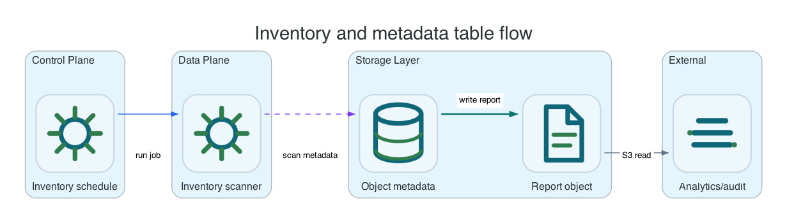

Inventory And Metadata Tables
Inventory reports and metadata table snapshots are written to same-cluster S3 buckets. They are product-local files, not AWS-managed catalog registration.
Common AWS CLI setup
Run this once for the target bucket. Replace li9-s3-runtime and app-data with your namespace and S3Bucket resource name.
export NS=li9-s3-runtime
export BUCKET_CR=app-data
export BUCKET="$(oc -n "$NS" get s3bucket "$BUCKET_CR" -o jsonpath='{.status.bucketName}')"
export SECRET="$(oc -n "$NS" get s3bucket "$BUCKET_CR" -o jsonpath='{.status.secretName}')"
export ENDPOINT="$(oc -n "$NS" get secret "$SECRET" -o jsonpath='{.data.AWS_ENDPOINT_URL}' | base64 -d)"
export AWS_ACCESS_KEY_ID="$(oc -n "$NS" get secret "$SECRET" -o jsonpath='{.data.AWS_ACCESS_KEY_ID}' | base64 -d)"
export AWS_SECRET_ACCESS_KEY="$(oc -n "$NS" get secret "$SECRET" -o jsonpath='{.data.AWS_SECRET_ACCESS_KEY}' | base64 -d)"
export AWS_REGION="$(oc -n "$NS" get secret "$SECRET" -o jsonpath='{.data.AWS_REGION}' 2>/dev/null | base64 -d || true)"
export AWS_REGION="${AWS_REGION:-us-east-1}"
export AWS_EC2_METADATA_DISABLED=true
li9s3() {
aws --endpoint-url "$ENDPOINT" --region "$AWS_REGION" --no-verify-ssl s3api "$@"
}To verify the setup, run:
li9s3 head-bucket --bucket "$BUCKET"
li9s3 list-objects-v2 --bucket "$BUCKET" --max-keys 1Inventory And Metadata Tables
Inventory reports and metadata table snapshots are generated by Li9 S3 into same-cluster buckets. They are product-local S3 objects intended for audits, reconciliation, analytics imports, and support investigations. They do not register with AWS-managed S3 Tables or Glue catalogs.

| Output | Format | Typical Use |
|---|---|---|
| Inventory report | CSV or Parquet, current or all object versions. | Bucket estate export, delete-marker audit, checksum/storage-class review. |
| Metadata table V1 snapshot | Parquet under aws_s3_metadata/<bucket>/<table>/. | Query-ready object metadata snapshot for local analytics workflows. |
| Metadata table V2 files | metadata.parquet, inventory.parquet, and journal.parquet. | Incremental metadata review and product-local table consumers. |
REPORT_BUCKET="${BUCKET}-reports"
li9s3 create-bucket --bucket "$REPORT_BUCKET"
cat > /tmp/inventory.json <<EOF
{
"Id": "daily-current",
"IsEnabled": true,
"IncludedObjectVersions": "Current",
"Schedule": {"Frequency": "Daily"},
"Destination": {
"S3BucketDestination": {
"Format": "CSV",
"Bucket": "arn:aws:s3:::$REPORT_BUCKET",
"Prefix": "inventory/"
}
}
}
EOF
li9s3 put-bucket-inventory-configuration --bucket "$BUCKET" --id daily-current --inventory-configuration file:///tmp/inventory.json
li9s3 get-bucket-inventory-configuration --bucket "$BUCKET" --id daily-currentMetadata Table Snapshot
Metadata table configuration is accepted through AWS-compatible XML. The healing cycle writes the snapshot into the destination bucket on the configured interval. Verify the result by listing the configured destination prefix and reading the generated Parquet objects.
cat > /tmp/metadata-table.xml <<EOF
<MetadataTableConfiguration>
<S3TablesDestination>
<TableBucketArn>arn:aws:s3:::$REPORT_BUCKET</TableBucketArn>
<TableName>object_metadata</TableName>
</S3TablesDestination>
</MetadataTableConfiguration>
EOF
aws --endpoint-url "$ENDPOINT" --region "$AWS_REGION" --no-verify-ssl s3api \
put-bucket-metadata-table-configuration \
--bucket "$BUCKET" \
--metadata-table-configuration file:///tmp/metadata-table.xml
# After the healing cycle:
li9s3 list-objects-v2 --bucket "$REPORT_BUCKET" --prefix "aws_s3_metadata/$BUCKET/object_metadata/"Validation Rules
Unsupported inventory formats and destination encryption modes are rejected before persistence, so a bad configuration does not create reports with unclear semantics. Use same-cluster bucket ARNs and verify that report objects appear with the expected prefix, schema, object count, version columns, and manifest sidecars.